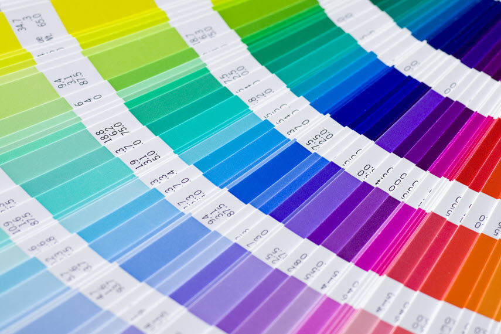

PORTFOLIO



Hola, soy Ana López. Soy una adolescente aficionada de cualquier cosa relacionada con la computación y la tecnología. Me encanta aprender nuevas cosas, y aunque me considero rápida para adquirir conocimientos, ponerlos en práctica siempre es todo un reto. Y a pesar de ser toda una novata en el mundo de la programación, siempre estoy dispuesta a llegar más allá.
A pesar de no recordar mucho acerca de esta época de mi vida, de seguro asento las bases para la educación que recibiría en el futuro próximo.
Como olvidar la primaria, cuando las tablas de multiplicar empezaban a darme dolores de cabeza y las matemáticas iban más allá que simples sumas y restas.
Conforme pasaban los años, la dificultad y responsabilidad iban aumentando proporcionalmente. Los tres niveles de eduación básica fueron fundamentales para formar los conocimientos que tengo hasta la actualidad, a pesar de que los últimos dos años los pasé con educación a distancia debido a la pandemia.
El diversificado es donde culmina todo el esfuerzo hecho en los años anteriores. Decidí por la carrera de computación por el hecho que me parecía interesantes las clases de programción y computación, que en mi punto de vista, tendrán una aplicación útil en mi futuro inmediato.